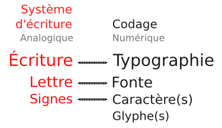

Conventions
Le domaine de la typographie est vaste. Son vocabulaire riche devient souvent un jargon obscur, sujet à interprétations diverses. Dans cet ouvrage, nous veillerons donc à bien expliquer le sens donné aux mots de base de la typographie et à nous tenir à ce lexique.

- La typo
- Il s'agit de la composante artistique, c'est-à-dire l'expression de la lettre, la façon de représenter l'alphabet. Ainsi, parler de création d'alphabet est une simplification abusive. Il s'agit le plus souvent de la création d'un style d'alphabet, et non d'un nouveau principe d'alphabet. Cette considération n'exclut pas une part de créativité. Elle se situe simplement au même niveau.
Il faut bien distinguer la démarche de création et de standardisation d'un alphabet qui est l'aboutissement d'un travail faisant appel à la discipline scientifique de la linguistique descriptive réalise en partenariat avec les autorités locales et la création de typos à proprement parler.
Il existe toutefois des cas d'authentique création d'alphabet s'appuyant sur une approche typographique comme, par exemple, celle de l'alphabet pan-nigérian mis au point par Hermann Zapf de 1983 à 1985 en collaboration avec la linguiste Kay Williamson1.
Pour être tout à fait complet, il convient de préciser qu'un alphabet (pouvant être latin, arabe, grec, cyrillique, coréen, etc.) n'est qu'un type parmi d'autres de systèmes d'écriture (désignés sous le nom de scripts en anglais) au même titre que les systèmes logographiques (associant un signe à un mot comme pour les idéogrammes chinois, aussi utilisé en japonais et coréen, ou encore comme dans le cas des hiéroglyphes égyptiens), les systèmes syllabiques (comme les kanas japonais ou l'écriture cherokee) sans oublier les systèmes pictographiques correspondant à des codes signalétiques plus ou moins standardisés et non plus à des langues2. À cet égard, signalons le projet ScriptSource.org3, un service collaboratif qui répertorie et détaille l'ensemble de la connaissance sur les différents systèmes d'écriture dans le monde ainsi que les différents standards internationaux correspondants: Unicode, ISO 639, ISO 15924, CLDR, etc.
- La fonte
- La fonte, appelée ainsi car historiquement issue de la fonte de plomb et d'antimoine*, désigne aujourd'hui le fichier numérique grâce auquel on peut utiliser la typo. À noter qu'à une typo peut correspondre plusieurs fontes, qui sont autant de variantes. Les variantes les plus courantes sont le romain, le gras, l'italique et le gras italique, bien connues des utilisateurs de traitement de texte.
- Le caractère
- Le caractère désigne la zone standardisée où l'un des éléments constitutifs du système d'écriture est défini (il y a bien sûr souvent plusieurs caractères par fonte, afin que celle-ci soit utilisable pour former des mots à l'écran).
- Le glyphe
- Le glyphe est la forme graphique composée de contours que peut revêtir un caractère (il peut y avoir plusieurs glyphes par caractère, plusieurs a minuscules par exemple, ou plusieurs styles de chiffres).
Les termes volontairement écartés
Nous avons pris le parti d'écarter les expressions police de caractères et caractère typographique et compte tenu de la relative notoriété, voire de la popularité de ces expressions, nous tenons à expliquer ce choix ici.
- Police de caractères
- L'expression police de caractères date de l'époque de la typographie au plomb et a été forgée par analogie avec l'expression police d'assurances. Elle désigne le récapitulatif des caractères de la casse (meuble servant à stocker les caractères en plomb, avec en haut les capitales et en bas les minuscules, ou bas-de-casse ; ces expressions subsistant dans les logiciels, y compris les traitements de textes les plus récents, nous les explicitons ici pour mémoire). Bien que séduisante, cette analogie n'est aujourd'hui plus d'actualité dans la mesure où la liste des caractères d'une fonte est présentée automatiquement par l'ordinateur. La police n'a pas non plus vocation à maintenir un ordre alphabétique, paramétré en amont par le codage. Il n'est pas besoin de récapituler cela dans un document à part, sauf à établir un spécimen des différents caractères dont la fonte est composée, mais ce dernier a davantage une fonction pédagogique, voire promotionnelle, ce qui s'accompagne parfois du rappel de la grille tarifaire, cette pratique tendant toutefois à se perdre aujourd'hui.
- Caractère typographique
- L'expression caractère typographique est née de la prise en compte de l'aspect tautologique de l'expression police de caractères présentée ci-dessus. Cette expression, très usitée au sein de la communauté des fondeurs, tend implicitement à tisser une analogie entre la forme graphique d'une typo et la personnalité de son auteur, par glissement sémantique entre caractère au sens typographique et caractère au sens psychologique (tel que longuement exposé dans les Caractères de La Bruyère). Si donc cette expression est intellectuellement séduisante, elle peut également causer beaucoup de confusion dans l'esprit du public, notamment en raison des menus Table des caractères ou Insérer un caractère spécial par ailleurs très répandu dans les systèmes d'exploitation et dans les logiciels.
-
Notons enfin que pour éviter d'alourdir le texte et le fil de la lecture du manuel, plusieurs termes appartenant au domaine de la typographie ou plus largement des logiciels et des pratiques libres ont été expliqués dans le chapitre Glossaire. Ils sont identifiés dans le corps du manuel par un astérisque.